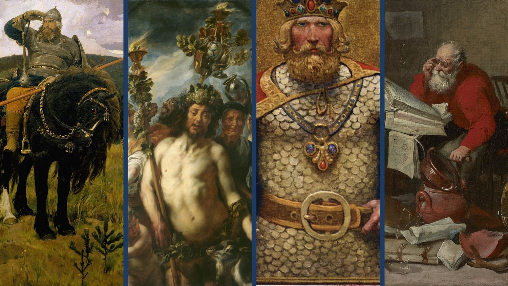
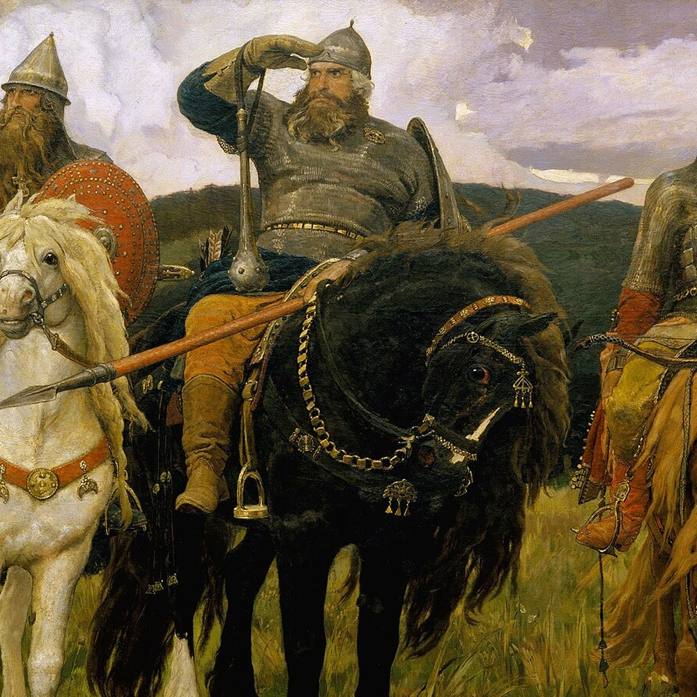
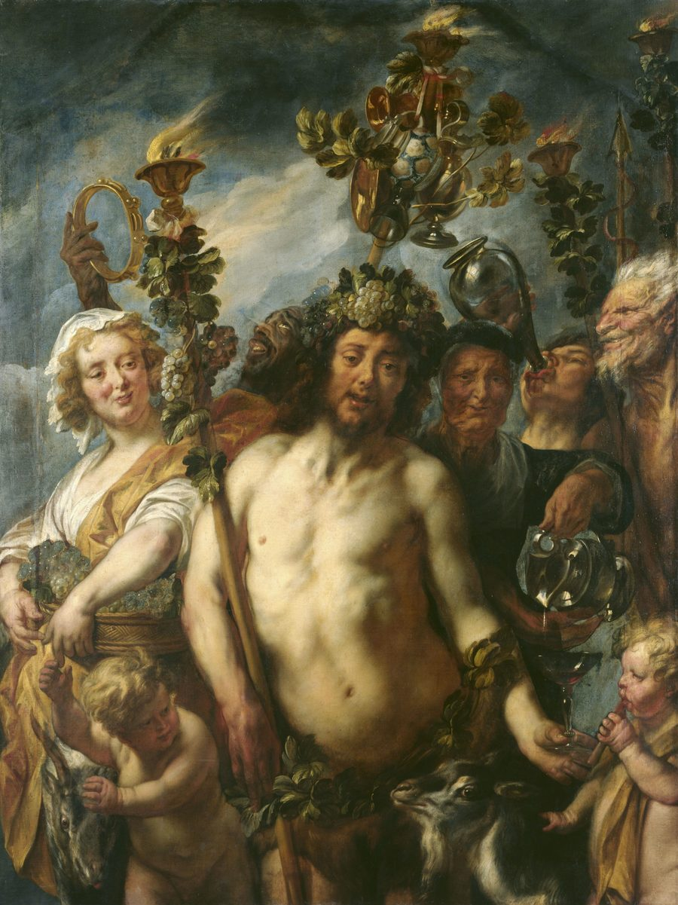
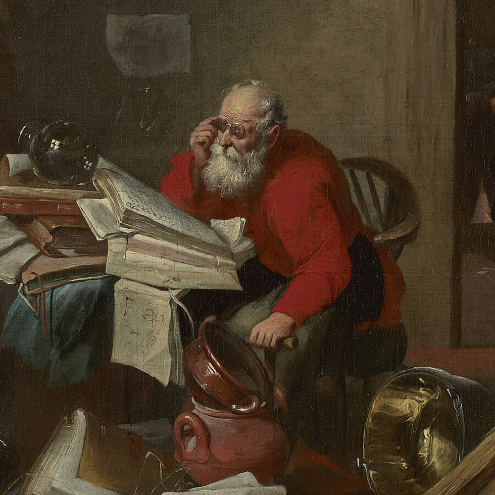
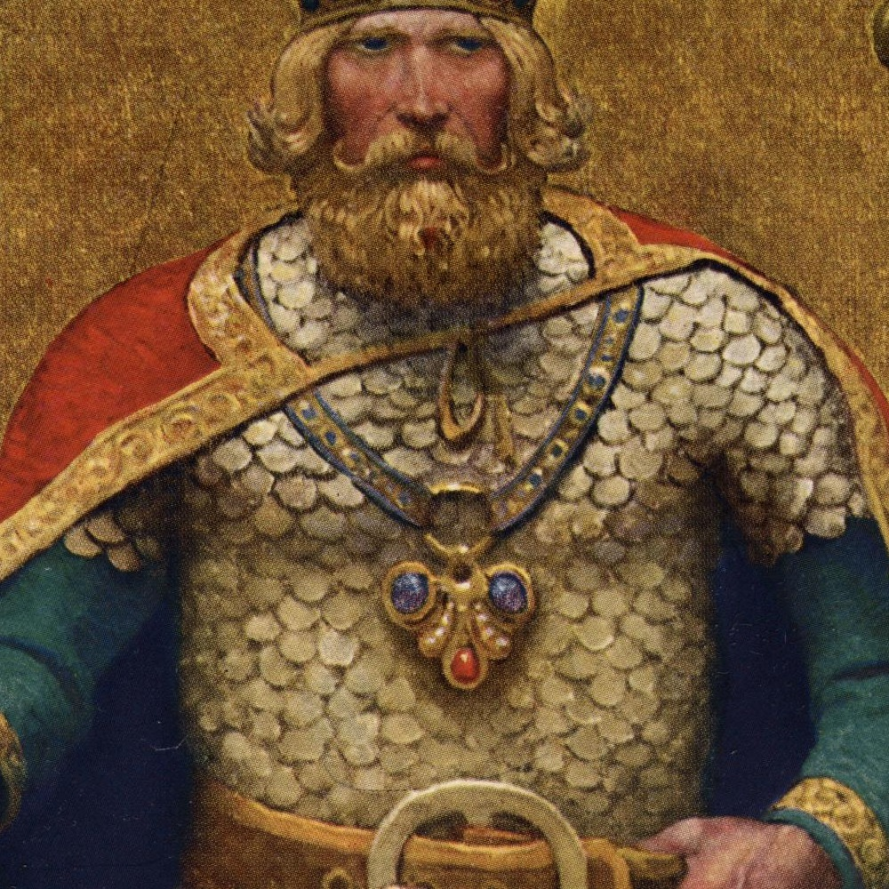

Kurs o czterech archetypach męskich, doświadczanych w połączeniu z ciałem, nie tylko intelektualnie

Dużo z tego, co mówi się dzisiaj o męskości, jest o udoskonalaniu. Lepsze nawyki, twardsza dyscyplina, bardziej zaawansowana wersja siebie. Rozwój zakłada, że jesteś projektem, który zawsze można jeszcze nieco zoptymalizować. Bardzo to siedzi wyłącznie w jednym archetypie, pewnie wiesz którym.
Ten kurs stoi na innym założeniu. Że nie jesteś projektem, tylko żywym ciałem, w którym jedne energie są obecne, czasem aż za bardzo, a dostęp do innych, potrzebnych, jest zablokowany.
Cztery archetypy Moore'a i Gillette'a - Król, Wojownik, Mag, Kochanek - nie są celami do osiągnięcia ani poziomami do odblokowania. Są opisem tego, co w tobie już jest, i tego, czego brakuje.
Dlatego pytanie w tym kursie nie brzmi „jak się rozwinąć".
Brzmi: co we mnie żyje, co jest martwe, i jak to ożywić.
To praktyczny temat, nie tylko teoretyczny. Ten kto pracuje nad sobą, robi listę rzeczy do naprawienia. Ten kto podłącza się do swojej żywotności, zauważa, że od czterech lat nie podjął żadnej decyzji, której się bał - i wie już, od którego archetypu jest odłączony.
Dla mężczyzn, którzy przerobili już trochę materiału o sobie i mają poczucie, że rozumieją więcej, siebie i świat. Ale - wiedza urosła a życie nie drgnęło.
Dla tych, którzy czytali Moore'a i Gillette'a i zostali z wrażeniem, że to ważna książka choć nie potrafią z nią zrobić nic konkretnego w swojej codzienności.
Dla tych, którzy mają dość języka rozwoju osobistego, ale nie mają na jego miejsce niczego innego.
Dla tych, którzy szukają, i dla których psychologia głębi wydaje się odpowiadać na ich pytania.
I dla terapeutek oraz terapeutów pracujących z mężczyznami — jeśli szukacie języka na to, co widzicie w gabinecie, ten materiał go daje. Nie trzeba być mężczyzną, żeby z niego skorzystać.
Dla kogo to nie jest. Jeśli szukasz motywacji, wzmocnienia swoich „skilli", planu na 30 dni albo kogoś, kto powie ci, co masz robić — to nie tutaj. Ten kurs pokazuje, jak te cztery energie wyglądają, kiedy są żywe, a jak wtedy, gdy dostęp do nich jest odcięty. Co z tym zrobisz, należy do ciebie.
Materiał, który oglądasz kiedy chcesz i tyle razy, ile potrzebujesz.
Bez terminów spotkań i nadążania za grupą. Materiał czeka na ciebie, a nie odwrotnie.
Jeśli któryś moduł trafi w coś żywego, wracasz do niego za miesiąc albo za rok. Jeśli inny cię akurat nie dotyczy — mijasz go i nic się nie dzieje. Nikt tego nie sprawdza.
Ten kurs jest zbudowany tak, żeby działał bez mojej obecności. Dlatego nie ma w nim sesji na żywo, grupy ani kontaktu ze mną — kupujesz wyłącznie materiał. Mówię to wprost, żeby nikt nie kupił nieporozumienia.




Pierwszy moduł: 14 września. Kolejne co tydzień, w poniedziałki:
14.09 · 21.09 · 28.09 · 5.10 · 12.10 · 19.10 · 26.10 · 2.11 — ostatni